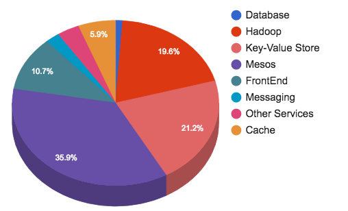
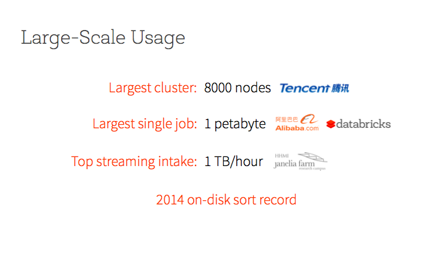
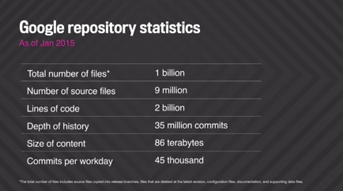
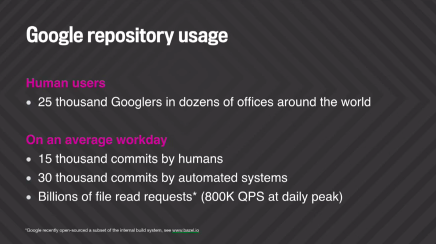
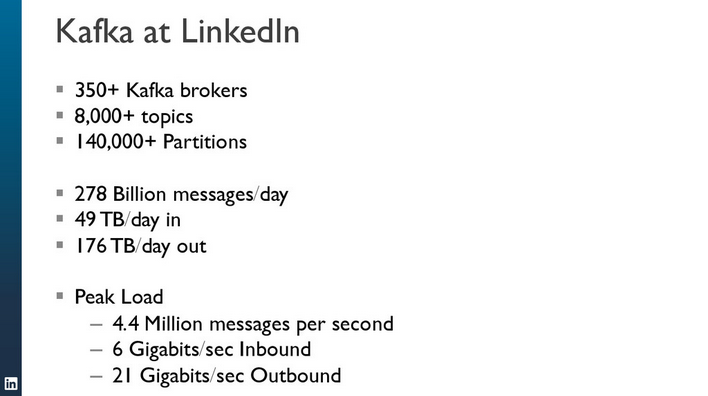
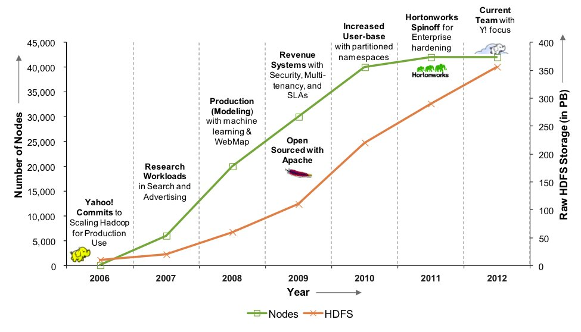

How big is big data really? From time to time, various organizations brag about how much data they have, how big their clusters are, how many requests per second they serve, etc. Every time I come across these statistics, I make note of them. It's quite amazing to see how these numbers change over time... looking at the numbers from just a few years ago reminds you of this famous Austin Powers scene. Here's another gem.
Without further adieu, here's "big" data, in reverse chronological order...
Apache DistributedLog is a replicated log store originally developed at Twitter. It’s been used in production at Twitter for more than four years, supporting several critical services like pub-sub messaging, log replication for distributed databases, and real-time stream computing, delivering more than 1.5 trillion events (or about 17 PB) per day.
Source: Strata Data Conference
Gaia continues to be a challenging mission in all areas even after 4 years of operation. In total we have processed almost 800 Billion (=800,000 Million) astrometric, 160 Billion (=160,000 Million) photometric and more than 15 Billion spectroscopic observation which is the largest astronomical dataset from a science space mission until the present day.
The Gaia mission is considered by the experts “the biggest data processing challenge to date in astronomy.
Source: ODBMS Blog: Gaia Mission maps 1 Billion stars. Interview with Uwe Lammers
Ever wonder how many web URL's the @internetarchive has archived and is in the wayback?drum roll... 567,683,748,000 (567Billion) as of today
— Brewster Kahle (@brewster_kahle) June 21, 2017
Current size o’ the @internetarchive: over 560,000,000,000 URLs collected (plus 2.3m books, 2.4m audio, 3m hours TV, 4m eBooks). #WAweek2017
— Ian Milligan (@ianmilligan1) June 14, 2017
.@jefferson_bail on Wayback Search: index on anchor text of in-bound links & 443 million homepages, 900 billion link graph. #WAweek2017
— Ian Milligan (@ianmilligan1) June 14, 2017
More details at Archives Unleashed 4.0.
Hello #SparkSummit2017 :) Kicking it off with @rxin... Here we go! #sparksummit #ApacheSpark pic.twitter.com/I4diGSOlZj
— GigaSpaces (@GigaSpaces) June 6, 2017
Streaming at 65m records/sec with structure steaming #SparkSummit pic.twitter.com/xZ7op98VH9
— Conor (@ConorBMurphy) June 6, 2017
Addition details can be found on the DataBricks blog: Making Apache Spark the Fastest Open Source Streaming Engine
According to Niels Meersschaert, Chief Technology Officer at Qualia, the Qualia team relies on over one terabyte of graph data in Neo4j.
Source: ODBMS Blog: Identity Graph Analysis at Scale. Interview with Niels Meersschaert
A graph database with a quadrillion nodes? Such a monstrous entity is beyond the scope of what technologist are trying to do now. But with the latest release of the Neo4j database from Neo Technology, such a graph is theoretically possible.
Source: datanami
The new enterprise data hub supports data processing and analytics across more than 20 PB of data, with 30 TB of fresh data added daily.
Source: NYSE: Gaining Real-time Insights from More Than 20 PB of Data
Overview of Twitter's current infrastructure:
Highlights:
Source: The Infrastructure Behind Twitter
532,461,462,000 URL's in the new Wayback index! go @internetarchive (this includes all the images and such, so the page count is ~ 279B)
— Brewster Kahle (@brewster_kahle) January 4, 2017
In October of 2012, we held just over 10 petabytes of unique content. Today, we have archived a little over 30 petabytes, and we add between 13 and 15 terabytes of content per day (web and television are the most voluminous).
Currently, Internet Archive hosts about 20,000 individual disk drives. Each of these are housed in specialized computers (we call them “datanodes”) that have 36 data drives (plus two operating systems drives) per machine. Datanodes are organized into racks of 10 machines (360 data drives), and interconnected via high-speed ethernet to form our storage cluster. Even though our content storage has tripled over the past four years, our count of disk drives has stayed about the same. This is because disk drive technology improvements. Datanodes that were once populated with 36 individual 2-terabyte (2T) drives are today filled with 8-terabyte (8T) drives, moving single node capacity from 72 terabytes (64.8T formatted) to 288 terabytes (259.2T formatted) in the same physical space! This evolution of disk density did not happen in a single step, so we have populations of 2T, 3T, 4T, and 8T drives in our storage clusters.
Source: Internet Archive Blog
Catch Xavier Léauté discussing streaming analytics at 300B events per day with Kafka, Samza and Druid https://t.co/Mq95Ueufdt #StrataHadoop
— Confluent (@ConfluentInc) September 29, 2016
Today Metamarkets processes over 300 billion events per day, representing over 100 TB going through a single pipeline built entirely on open source technologies including Druid, Kafka, and Samza. Growing to such a scale presents engineering challenges on many levels, not just in design but also with operations, especially when downtime is not an option.
Source: Strata+Hadoop World
A single Spark job that reads 60 TB of compressed data and performs a 90 TB shuffle and sort.
Source: Facebook Engineering
Samsung is showing off a monster million IOPS SSD that can pump out read data at 6.4 gigabytes per second and store up to 6.4TB.
Source: The Register
Tesla logs more sensor miles daily than Google has in its history #EmTechDigital @techreview https://t.co/cnf4bspU4t pic.twitter.com/XNoAWaH2LY
— Steve Jurvetson (@dfjsteve) May 24, 2016
At #EmTechDigital: Tesla now gains a million miles of driving data (comparing human to robot safety) every 10 hours. So they log more miles per day than the Google program has gathered since inception. Tesla's design goal is to be 2-10x better than human drivers.
Source: Steve Jurvetson
143,280,496,726: The number of words Google translates per day into over 100 languages.
— Delip Rao (@deliprao) May 21, 2016
Google translates more than 100 billion words each day.
Source: Official Google Blog
Related, Google CEO Sundar Pichai announced during his Google I/O keynote that 20 percent of queries on its mobile app and on Android devices are voice searches.
Source: Search Engine Land
Google App Engine serves over 100 billion requests per day.
Source: Google blog
Much of the Internet r the "dark matters" of the cyber universe - pictures & videos. Our work is to illuminate them! pic.twitter.com/SkGNcA4Fxl
— Fei-Fei Li (@drfeifei) April 18, 2016
#Spotify numbers: 75M users, 30M songs, 1.5B playlists, 1TB user data every day#ecir2016 @ecir2016 #industryday
— Gianmaria Silvello (@giansilv) March 23, 2016
Congrats @EMCDSSD @jmc_cool @cj_desai @jburton #FaceMelting #RackScale Flash #DSSD D5 https://t.co/CFUoBKD9Q6 pic.twitter.com/sczFoZBN1O
— Michael Dell (@MichaelDell) March 10, 2016
Source: EMC Press Release
For YouTube alone, users upload over 400 hours of video every minute, which at one gigabyte per hour requires more than one petabyte (1M GB) of new storage every day or about 100x the Library of Congress. As shown in the graph, this continues to grow exponentially, with a 10x increase every five years.

Source: Google Cloud Platform Blog
For those that haven't seen the updated Sequencing vs Moore's Law chart, we did pretty good in 2015 pic.twitter.com/pYTCxsXBRj
— Marc Chevrette (@wildtypeMC) January 20, 2016
Source: DNA Sequencing Costs: Data from the NHGRI Genome Sequencing Program (GSP)
. @apachekafka powers @Microsoft Bing, Ads and Office. 1 trillion messages/day, 1000+ brokers, 5 million/sec peak pic.twitter.com/pQm63BUA5I
— Neha Narkhede (@nehanarkhede) November 21, 2015Demo of a Google Container Engine cluster serving 1 million HTTP requests per second.
Source: Kubernetes blog

Source: Keynote by Ion Stocia at IEE Big Data 2015
Yahoo has a current footprint of more than 40,000 servers and 600 petabytes of storage spread across 19 clusters.
Source: Yahoo! blog
Google has around two billion lines of code totaling around 85 TB, all in a mono-repo. There are around 45,000 commits per day from 25,000 engineers. See talk here.


Source: Wired
Our Hadoop filesystems host over 300PB of data on tens of thousands of servers. Blog post below further describes Twitter's federated, multi-DC Hadoop setup.
Source: Hadoop filesystem at Twitter
The Bloomberg end of day historical system is called PriceHistory... This system was designed for the high volume of requests for single securities and quite impressive for its day. The response time for a year's data for a field on a security is 5ms, and it receives billions of hits a day, around half a million a second at peak.
Source: Apache Blog
Kafka at LinkedIn handles 1.1 Trillion messages written per day http://t.co/BPdHSSub5S
— Jay Kreps (@jaykreps) September 2, 2015Source: Confluent blog post
Ever hear that #golang doesn't scale? Explain Baidu's HTTP/S service - 100 billion requests/day. 100% #golang. pic.twitter.com/zyKR98CnbH
— Jason Buberel (@jbuberel) July 5, 2015
See you at the #hadoopsummit Thursday! Hear @timt talk abt Flurry Analytics and the 5+ PB we have in HBase http://t.co/nQSMMfNJrU
— Flurry (@FlurryMobile) June 9, 2015#hadoopsummit 2015 flurry uses #hbase heavily with 5+ PB pic.twitter.com/H3R23eoQwF
— Subash D'Souza (@sawjd22) June 11, 2015@sawjd22 @Tshooter @twitter its 300+ PB :-)
— Sudhir Rao (@ysudhir) June 9, 2015Uber engineer: @apachekafka forms the backbone of Uber's real-time dispatch infrastructure. Processes 10s of billions of events/day
— Neha Narkhede (@nehanarkhede) May 20, 2015Pistachio is Yahoo's recently open-sourced distributed key value store system:
It’s being used as the user profile storage for large scale ads serving products within Yahoo. 10+ billions of user profiles are being stored with ~2 million reads QPS, 0.8GB/s read throughput and ~0.5 million writes QPS, 0.3GB/s write throughput. Average latency is under 1ms. It guarantees strong consistency and fault-tolerance. We have hundreds of servers in 8 data centers all over the globe supporting hundreds of millions in revenue.
Source: Yahoo! Engineering Blog
#HBaseCon #google #bigtable statistics pic.twitter.com/o4tULk8Q8J
— Subash D'Souza (@sawjd22) May 7, 2015Watch @jeremy_carroll's talk on HBase at scale @Pinterest. An online, high-demand environment with ~5M operations per second! #HBaseCon
— karan gupta (@karan) May 7, 2015nice to be at the Bay Area Mesos meet up tonight and see Apple announce that Siri is powered by @ApacheMesos pic.twitter.com/kEphLs7Rfk
— Chris Aniszczyk (@cra) April 23, 2015Blog post describing how Siri's backend is powered by Apache Mesos.
Yahoo stats at #hadoopsummit - 1 million jobs per day! pic.twitter.com/UAsV4yPEND
— Andy Leaver (@AndyLeaver) April 16, 2015Yahoo numbers again: 600 petabytes, 43 000 servers, 1 million jobs/day #hadoopsummit pic.twitter.com/9EMGndZiqb
— Bence Arato (@BenceArato) April 16, 2015“People do stupid stuff all the time; #Hadoop lets them do stupid stuff at scale...” Yahoo Admin (via @owen_omalley) #HadoopSummit
— Jos van Dongen (@josvandongen) April 14, 2015Spotify’s net Hadoop data volume is 13 PB (plus replication), but to my surprise it doesn’t include any music (stored on S3). #HadoopSummit
— Andy Bitterer (@bitterer) April 14, 20153B ads displayed daily, 6 #datacenter on 3 continents. Find out how @criteo manages #BigData at our booth at #hadoopsummit
— Criteo Labs (@CriteoEng) April 16, 2015We launch ~200M containers per day on our Hadoop clusters @twitterhadoop. Yeah that’s > 2.3K/s on average. #scale #Hadoop
— Joep R. (@joep) March 4, 201520 years ago this week, Newsweek published the wrongest column ever. http://t.co/ap8vtRnpIZ #NewsweekRewind pic.twitter.com/8LHAKpw4rE
— Newsweek (@Newsweek) February 28, 2015Interest in Spark is overwhelming on Stack Overflow. #StrataHadoop pic.twitter.com/amReOTetLk
— Donnie Berkholz (@dberkholz) February 20, 2015Today at LinkedIn Kafka handles over 500 billion events per day spread over a number of data centers. It became the backbone for data flow between systems of all kinds, the core pipeline for Hadoop data, and the hub for stream processing.
Source: Confluence Blog
#LinkedIn @ #StrataConf: 80000 QPS, 24 server clusters, up to 100 nodes/cluster, 99.99% latency on #Couchbase pic.twitter.com/iK4CpGGpmg #nosql
— Vincent Gonnot (@vgonnot) February 20, 2015Andrew Moore (CMU professor who built Google Pittsburgh and helped grow Google's Adwords and shopping systems) shared his experiences at the NITRD Big Data Strategic Initiative Workshop held at Georgetown in January, 2015. I attended the workshop and captured a few tidbits:
Andrew Moore: Google's ecommerce platform ingests 100K-200K events per second continuously. http://t.co/55eM351eJG
— Jimmy Lin (@lintool) January 23, 2015Andrew Moore: Google's ecommerce machine-learned models based on data from last 9 months. Interesting. http://t.co/55eM351eJG
— Jimmy Lin (@lintool) January 23, 2015Andrew Moore proposes a "data science" stack: device, "kernel" (e.g., kv stores), machine learning, modeling, decision support.
— Jimmy Lin (@lintool) January 23, 2015Andrew Moore admits, "computer scientists at Google have gotten fat and lazy" with all the available compute resources.
— Jimmy Lin (@lintool) January 23, 2015Andrew Moore: there are some solutions outside Google that are just as good, but require 3 orders magnitude less hardware resources.
— Jimmy Lin (@lintool) January 23, 2015Spark sorts 100 TB in 23 minutes on 206 machines (6592 virtual cores), which translates into 4.27 TB/min or 20.7 GB/min/node.
Spark sorts 1 PB in 234 minutes on 190 machines (6080 virtual cores), which translates into 4.27 TB/min or 22.5 GB/min/node.
Source: Databricks blog and also this older post.
From an interview with Mithun Radhakrishnan, member of the Yahoo Hive team:
"Y!Grid is Yahoo's Grid of Hadoop Clusters that's used for all the "big data" processing that happens in Yahoo today. It currently consists of 16 clusters in multiple datacenters, spanning 32,500 nodes, and accounts for almost a million Hadoop jobs every day. Around 10% of those are Hive jobs."
Source: ODBMS Industry Watch
Big data has just passed the top of the Hype Cycle, and moving toward the Trough of Disillusionment. This is not a bad thing. It means the market starts to mature, becoming more realistic about how big data can be useful for organizations large and small. Big data will become business as usual.
Source: Gartner
Always exciting when your Hadoop 2 clusters grow beyond 5000 machines @twitterhadoop cc @corestorage
— Joep R. (@joep) July 29, 2014Some stats:
Source: Pinterest Engineering Blog
#sigir2014 #sirip Baidu processes 7 billion searches per day.
— Mark Sanderson (@IR_oldie) July 7, 2014Max int in javascript 2^53=8 PB isn't enough to show some individual users' HDFS usage on our #Hadoop clusters. Overflow is so 20th century!
— Joep R. (@joep) June 27, 2014A perspective on progress of computing from Bob Mercer's ACL lifetime award talk. #acl2014 pic.twitter.com/DQ0j5NF8wI
— Delip Rao (@deliprao) June 25, 201415 million total guests have stayed on Airbnb. It took us nearly 4 years to get our 1st million, and now we have 1M guests every month.
— Brian Chesky (@bchesky) June 11, 2014[David] Hornik [of August Capital] was also an early stage investor in Splunk, and he sees lots of potential here for DataTorrent. “When you can process a billion data points in a second, there are a lot of possibilities.”
Source: TechCrunch
What would you do with a system that could process 1.5 billion events per second? That’s the mind-boggling rate at which DataTorrent’s Real-Time Streaming (RTS) offering for Hadoop was recently benchmarked. Now that RTS is generally available–DataTorrent announced its general availability today at Hadoop Summit in San Jose–we may soon find out.
That 1.5-billion-events-per-second figure was recorded on DataTorrent’s internal Hadoop cluster, which sports 34 nodes. Each node is able to process tens of thousands of incoming events (call data records, machine data, and clickstream data are common targets) per second, and in turn generates hundreds of thousands of secondary events that are then processed again using one of the 400 operators that DataTorrent makes available as part of its in-memory, big-data kit.
Source: Datanami
#hadoopsummit @yahoo - benchmark for interactive analytics: 60B events, 3.5TB data compressed, response time of <400ms. WOW! @QlikView
— bob hardaway (@bobhardaway) June 4, 2014Wondering how big Hadoop clusters get? Yahoo is approaching 500 PB #hadoopsummit #bigdatap http://t.co/osNZrZR5ir
— richardwinter (@richardwinter) June 3, 2014Snapchat claims that over 700 million snaps are shared per day on the service, which could make it the most-used photo-sharing app in the world — ahead of Facebook, WhatsApp, and others. Even Snapchat’s Stories feature seems to be doing well, amassing 500 million views per day.
Source: The Verge

Source: Samza at LinkedIn: Taking Stream Processing to the Next Level by Martin Kleppmann at Berlin Buzzwords on May 27, 2014
David Glazer showing what #bigdata means @google #bigdatamed pic.twitter.com/8YlDhfqJOW
— Andrew Su (@andrewsu) May 22, 2014Tale of the tape: 400+ Exabytes of data are stored on tape! https://t.co/3SX9AGWq1i #tapeworldrecord http://t.co/G0r1GuUFP0
— IBM Research (@IBMResearch) May 20, 2014Here's a local copy of infographic.
Here's more bragging from IBM about achieving a new record of 85.9 billion bits of data per square inch in areal data density on low-cost linear magnetic particulate tape.
Bigtable scale numbers from keynote talk at HBaseCon2014 by Carter Page:
Correction: BigTable at Google serves 2+ exabytes at 600M QPS organization wide. That's a scale quite challenging to conceptualize. Wow.
— Andrew Purtell (@akpurtell) May 6, 2014More HBaseCon2014 highlights.
EBay's scaling of their Hadoop clusters is impressive. pic.twitter.com/SVNf42LAMI
— Owen O'Malley (@owen_omalley) April 3, 2014Our warehouse stores upwards of 300 PB of Hive data, with an incoming daily rate of about 600 TB.
Source: Facebook Engineering Blog
Flurry has the largest contiguous HBase cluster: Mobile analytics company Flurry has an HBase cluster with 1,200 nodes (replicating into another 1,200 node cluster).
Editorial Note: Really? Even larger than Facebook's HBase cluster that powers Messages?
Source: O'Reilly Radar
Kafka metrics @ LinkedIN 300 Brokers, 18000 topics, 220 Billions messages per day... impressive! #apachecon
— Ronan GUILLAMET (@_Spiff_) April 7, 2014Wayback Machine updated, now 397,144,266,000 web objects in it, (html, jpg, css). Getting close to 400Billion. @internetarchive
— Brewster Kahle (@brewster_kahle) February 28, 2014Talk How Google Backs Up the Internet. Here's a nice blog post summarizing talk contents.
Interesting tidbits:
Other (personal) observations:
Jeff Dean at XLDB: Largest Google Bigtable cluster: ~100s PB data; sustained: 30M ops/sec; 100+ GB/s I/O (gmail?) https://t.co/BbL8J2VNB4
— Jimmy Lin (@lintool) September 17, 2013Source: Jeff Dean's talk slides at XLDB 2013 [local copy]
Estimate: Google has close to 10 exabytes of active storage attached to running clusters.
Source: What if?
For reference: Total disk storage systems capacity shipped (in 2013) reached 8.2 exabytes.
Source: IDC Press Release
All of these improvements have made Giraph fast, memory efficient, scalable and easily integrated into our existing Hive data warehouse architecture. On 200 commodity machines we are able to run an iteration of page rank on an actual 1 trillion edge social graph formed by various user interactions in under four minutes with the appropriate garbage collection and performance tuning. We can cluster a Facebook monthly active user data set of 1 billion input vectors with 100 features into 10,000 centroids with k-means in less than 10 minutes per iteration.
Source: Facebook Engineering
oh thoseYyahoo stats, like 365 PB storage, 330k YARN nodes, ~4- 6 YARN jobs per second #HadoopSummit #bigdata term sounds almost quaint
— Tony Baer (@TonyBaer) June 26, 2013#Hadoop at Yahoo - 365+ PB of HDFS storage, 30,000 nodes, 400,000 jobs per day, 10 million hours per day #hadoopsummit
— Jeff Kelly (@jeffreyfkelly) June 26, 2013There are now more than 2 trillion objects stored in Amazon S3 and that the service is regularly peaking at over 1.1 million requests per second.
Source: Amazon Web Services Blog
Neustar went from storing 1% of data for 60 days at $100k/TB on EDW to 100% of data for over a year at $500/TB on Hadoop #hadoopsummit
— Matt Aslett (@maslett) March 21, 2013Some EA video games produce over 1 TB of data per day. Analyze if users are playing the game the way it is intended. #strataconf
— Aaron Lewing (@_aaroneous) February 27, 2013275 million users generate 50 TB of data a day for @ea #strataconf (cc @kon_s ) http://t.co/dgHXDDGADF
— Joerg Blumtritt (@jbenno) February 27, 2013Around ~45k hadoop nodes, ~350 PB total
Source: YDN Blog
Blog post about the Internet Archive's 10 PB party.
10,000,000,000,000,000 Bytes Archived! @internetarchive go open content movement http://t.co/UDO1Vpwd
— Brewster Kahle (@brewster_kahle) October 26, 2012#WaybackMachine updated with 240 billion pages! Go @internetarchive ! 5PB be #BigData http://t.co/vrAq9NL3
— Brewster Kahle (@brewster_kahle) January 10, 2013Source: Internet Archive
Google has seen more than 30 trillion URLs and crawls 20 billion pages a day. One hundred billion searches are conducted each month on Google (3 billion a day).
Source: Spotlight Keynote With Matt Cutts #SESSF (from Google)
eBay Marketplaces:
A glimpse on our Cassandra deployment:
Source: Slideshare [local copy]
Source: Hugh Williams Blog Post
HDFS growth at #facebook. 100 PB in some clusters. 200 million files #hadoopsummit pic.twitter.com/qyaMaper
— chiradeep (@chiradeep) June 13, 2012Listening to NASA big data challenges at #hadoopSummit, the square kilometer array project will produce 700tb per second. TB. Per second.
— Matt Winkler (@mwinkle) June 13, 2012Holy crap. Square kilometer array will generate 700 TB/sec. ... What? #NASA #HadoopSummit
— Jonathan Natkins (@nattyice) June 13, 2012Late last week the number of objects stored in Amazon S3 reached one trillion.
Source: Amazon Web Services Blog
18 Million Visitors, 10x Growth, 12 Employees, 410 TB Of Data.
80 million objects stored in S3 with 410 terabytes of user data, 10x what they had in August. EC2 instances have grown by 3x. Around $39K fo S3 and $30K for EC2.
Source: High Scalability Blog Post
Source: Datanami
eBay is amazingly dynamic. Around 10% of the 300+ million items for sale end each day (sell or end unsold), and a new 10% is listed. A large fraction of items have updates: they get bids, prices change, sellers revise descriptions, buyers watch, buyers offer, buyers ask questions, and so on. We process tens of millions of change events on items in a typical day, that is, our search engine receives that many signals that something important has changed about an item that should be used in the search ranking process. And all that is happening while we process around 250 million queries on a typical day.
Source: Hugh Williams Blog Post
A modern HTTP server (nginx 1.0.14) running on somewhat recent hardware (dual Intel Xeon X5670, 6 cores at 2.93 GHz, with 24GB of RAM) is capable of servicing 500,000 Requests/Sec.
Source: The Low Latency Web
A 777 will generate 1 TB of data from all the sensors during a 3 hr flight! Crazy. #strataconf #jumpstart
— Rob May (@robmay) February 28, 201215 Billion Page Views A Month And Harder To Scale Than Twitter: 500 million page views a day, a peak rate of ~40k requests per second, ~3TB of new data to store a day, all running on 1000+ servers.
Source: High Scalability Blog Post
In 2011 the world will create a staggering 1.8 zettabytes.
Source: IDC
Source: High Scalability Blog Post
In 2010, Facebook had the largest Hadoop cluster in the world, with over 20 PB of storage. By March 2011, the cluster had grown to 30 PB.
Source: Facebook Engineering Blog
Facebook Hadoop: 36 PB of uncompressed data, >2250 machines, 23,000 cores, 32 GB of RAM per machine, processing 80-90TB/day. #hadoopsummit
— Ron Bodkin (@ronbodkin) June 29, 2010In a new-to-me metric, Facebook has 610 Hadoop nodes, running in a single cluster, due to be increased to 1000 soon.
Source: DBMS2
Metrics on eBay's main Teradata data warehouse include:
Metrics on eBay's Greenplum data warehouse (or, if you like, data mart) include:
Source: DBMS2
In 2007, humankind was able to store 295 exabytes.
Source: Science Magazine
All the empty or usable space on hard drives, tapes, CDs, DVDs, and memory (volatile and nonvolatile) in the market equaled 264 exabytes.
Source: IDC
According to the Visa website, they processed 27.612 billion transactions in 2007. This means an average of 875 credit transactions per second based on a uniform distribution. Assuming that 80% of transactions occur in the 8 hours of the day, this gives an event rate of 2100 transactions per second.
Source: Schultz-Møller et al. (2009)
{kind=link}
{kind=link}